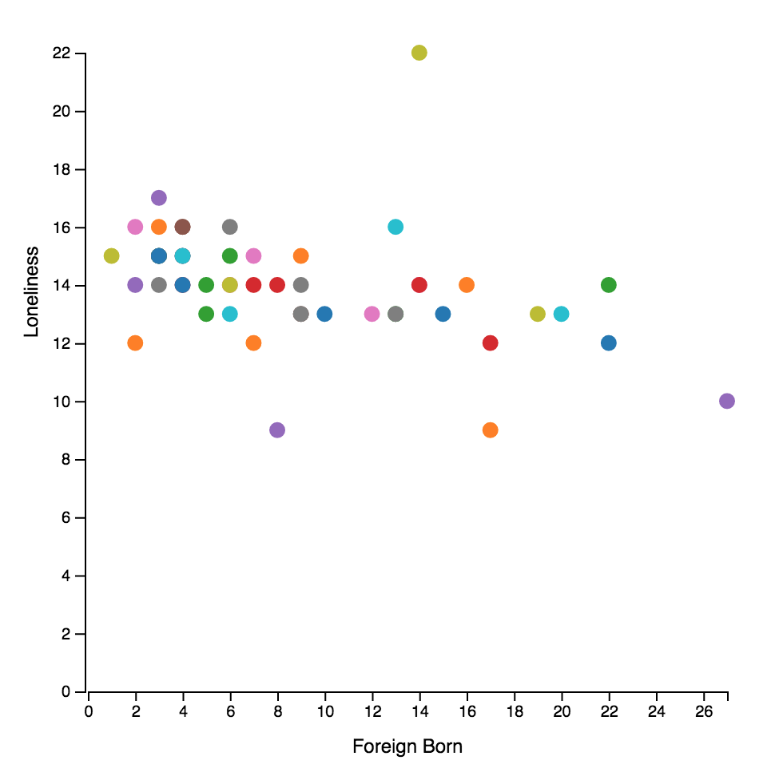

Project Information:
Project Team Size: 3
Project Duration: 1Month
Project Team Members: Swati, Kenzo, Dhivya
Design Process
Finalizing the Theme:
As a team, we first divided the ACS table variables among ourselves and started to examine those variables. Then we brainstormed our ideas based on the selected variables and ended up with a theme for our project Life Style, Education and Transport Distribution. Life Style: The following aspects are covered in this part
Overall age distribution
Overall sex distribution
Overall Living Style Distribution Education: The following types are covered in this part
Overall Distribution for graduate students with the following privilege:
Born in State of Residence
Born in Other states
Native born but outside US
Foreign Born Transport:The following features are covered in this part
Different means of Transport Distribution:
Car Alone, Carpooled, Public transports, Taxicabs, motorcycle, bicycle, Walk, others and working from home.
Different commute time to Work Distribution:
Less than 5 min, 5-9, 10-14, 15-19, etc. more than 90 mins.
Finalizing the Layout:
Based on the requirements of the project, we organized the Design elements as followed.
1.The Title:This element covers the heading for our project home page.
2.The Selection Bar:This has all the selection options required for manipulating the visualization.
1.A combo box to choose different variables.
2.An option box to toggle between state or county. (Later we changed it to buttons due to technical difficult)
3.Another box enclosing a button and 2 combo boxes to use it in the scatter plot
4.Link to heat map page
5.Link to Documentation page
3.The Map area: The choropleth for the selected (non related variables e.g. sex distribution and age distribution) variables will get displayed here.
4.Pie Chart area: The overall distribution of different related variables (e.g. Living alone, living with relatives, living with child etc. will get displayed on a pie chart.
5.Scatter Plot area: Here the users are given an option that they can choose 2 variables and view the relationship between them.
6.Distributed Charts area: Here either a specific variable distribution across the states of the country is displayed in a bar chart or multiple charts are displayed for each state the user clicks on the choropleth.
7.Heat Map page: This page displays eight types heat maps for the following options
Total Population
Loneliness (18-34;35-64;65+)
Foreigners
Education details
Rationale of our design choices:
1.Combo box for selection: This option provides users an easy way to choose the option and it will not clutter the area since it auto collapses once the user has completed his/her selection. 2.Map area and Pie chart/Scatterplot area side by side: This way the users can see the the overall distribution of a specific category on the choropleth map and when they hover over the states they can view the category distribution on the pie chart. They can also compare 2 variables in the scatterplot and click a point on the plot to highlight a state on the choropleth map. 3.Heat Map on a separate page: Moving the heat map to another page gives the users the freedom to explore it freely without any spacial constraints. 4.Distribution Maps at the bottom:
Here bar charts for variables that needs a comparative study can be viewed here. We kept it at the bottom to give the users the freedom to view multiple state charts all at a time.
How we used your visualizations to discover facts or answer questions we had.
Understanding the Life Style in US:
1. How young or old a state is in terms of people who live there?
2. How individualistic the society is? How much people are sharing their lives with other people? Are people are living in groups?

We have found that interestingly, there is a relation between the percentage of people who live alone, and the amount of foreigners there are in a particular state. As you can see in the above scatterplot, there is a trend for loneliness to lower as the amount of foreigners rise. That could mean a number of things including foreigners being more open and seeking for romantic partners for a green card.
Understanding overall professional Education dispersion:
3. How educated the society is in terms of professional degrees Understanding what their daily commute is like:
4. What means of transportation people use to commute?
5. How Long they will take to Commute to work?